Affection
Much like its titular emotion, Jack Kilgore’s debut is both strange and profound, an experimental electronic record that traffics in droning synth waves, spoken word soundbites, and references to bread, all of which somehow communicate awe for the interconnectedness of human experience. On their own, these songs stand as monoliths of copper magic, dense and impenetrable walls of sound reminiscent of the grainy synth baths on OPN’s Replica crossed with some of the more aggressively schizophrenic cuts from Aphex Twin’s Drukqs. However, when paired with the clips and images selected by Kilgore for its visualizer, they become auditory lenses revealing the meaning in these small moments from life in the Anthropocene.
Lyrics
1. the point
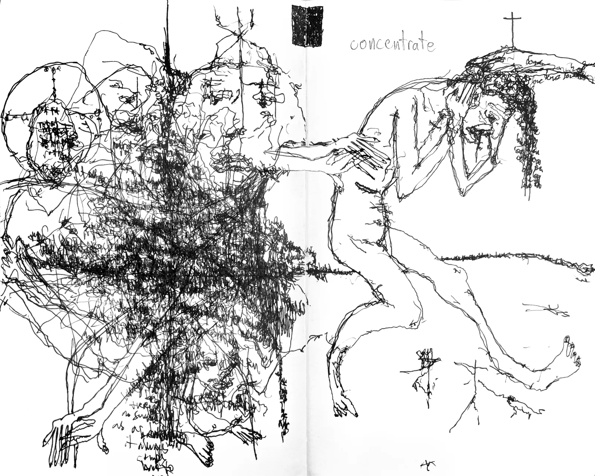
And from the endless chatter, I come to myself in an empty room. I've lost sight of the point.
2. Bread
Why are you afraid? Why are you afraid of saying something? Why are you afraid of sex? Why are you afraid of crying? Why are you afraid of elation? Why are you afraid of the point? Why are you afraid?
3. toil
And the fear of the unnameable, leads us higher up the ladder. With delusions of grandeur we toil over sculpture and system, declaring this is the world! This is the world! And with fervor we build atop, we build atop! And we build and build and build and tell them to build and tell you to build and tell the next ones to build. But we look back, and we forget why we've built. But we've built and this is true, so it must be good, so we continue to build. And our great ladder reaches higher and higher into the pit.
4. Rejoice
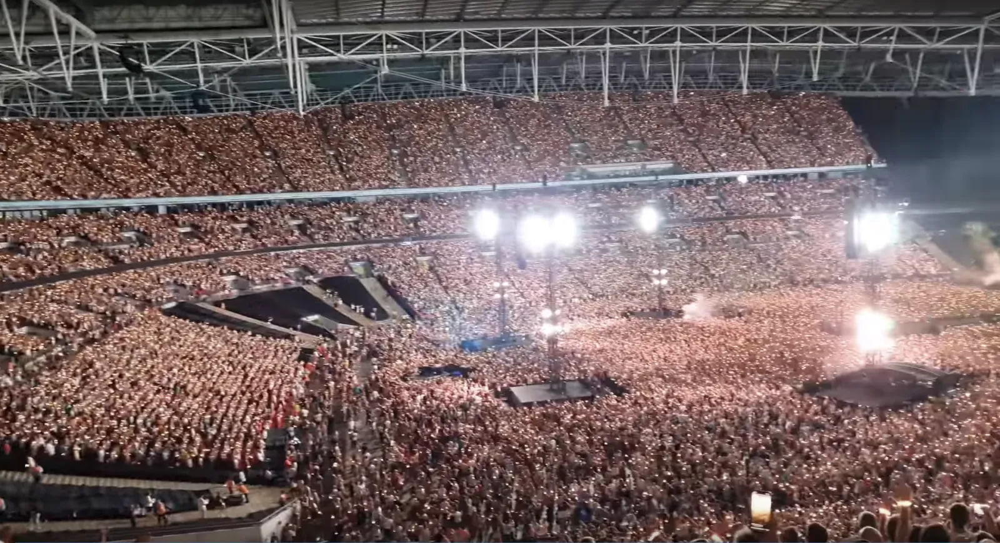
5. Participate
I can participate. I can participate. I can participate. I will participate. I will participate. I will participate and entangle myself! Entangled in participate and I love to participate and join in and find someone special, find something special. To make a habit out of it, to find something special, to find someone special. To participate, to participate, to dedicate ourselves to participate. And we'll toil up the ladder. We'll find that elation, that elation that's blasted up towards the sky, the walls, the loving room, the fury of pure momentum. Pure ascensions, pure participate. I am a part of something and I've finally found love.
6. I love you through hiccups
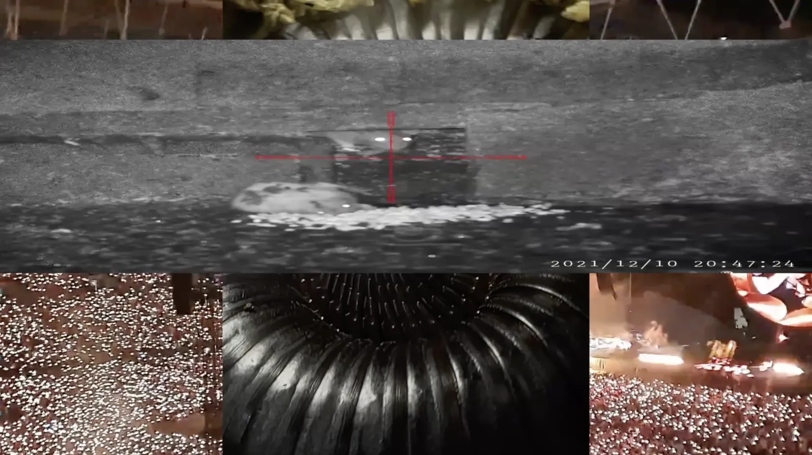
A: A long time ago we stood right here in this spot. And you said something you remember what you said? B: No, maybe? A: When you looked at the temple what did you say? B: Said I'm going there someday? A: And what did I say? B: That I'm not. A: But now I want to take you there. Like I've said, you've been the love of my life I care about you so much. I can't imagine my life without you. I want you in my life forever, okay? B: Sister of life. A: I have something for you. [Name]. Will you make me the happiest man in the world? And mar-
7. collapse
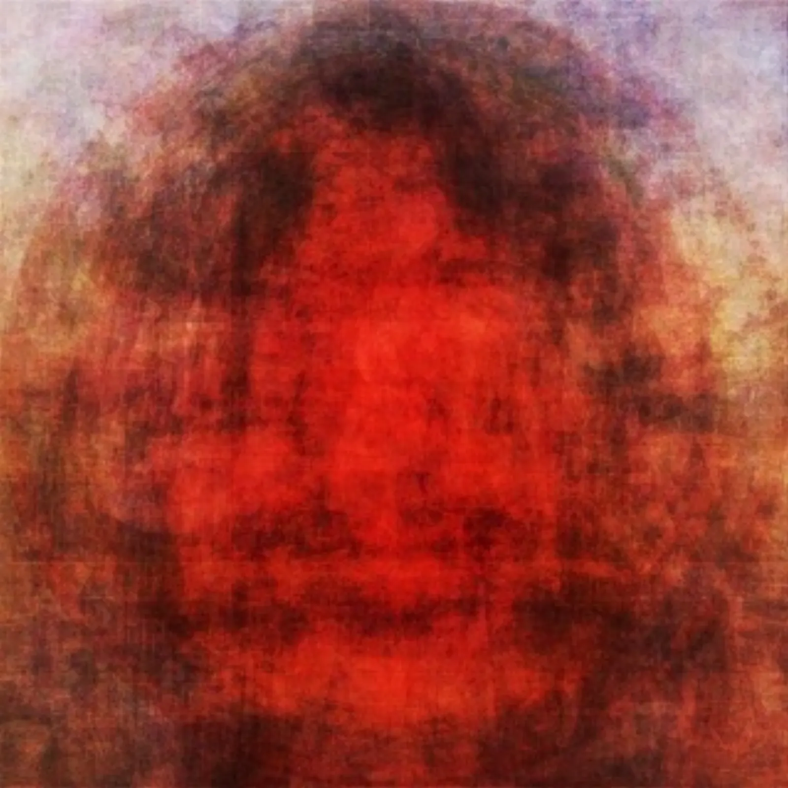
And the plastic skeletons of our abstractions they fall apart, they fall apart, and our dreams, fallen apart, become fake become free, and we watch everything fall apart. And those objects of pure imaginings fall apart, they fall apart, and they land on 16 billion transistors fall apart. And those objects start to look like people fallen apart. A collage of hypertext, plaintext, images, and videos. I think I love them?
8. Ego
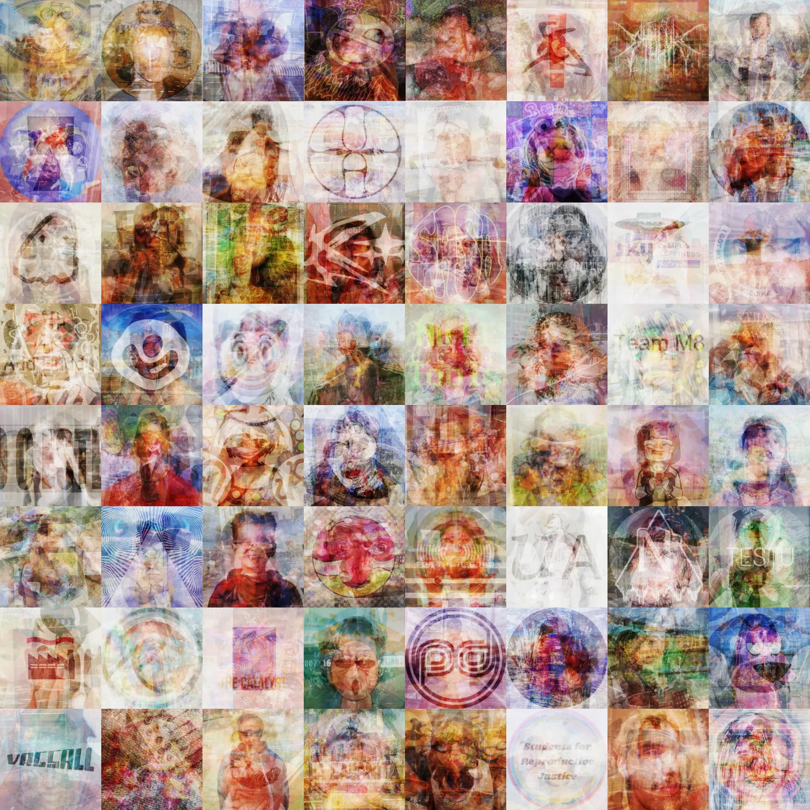
9. Special
I think we got something special. we try. WE TRY
10. i thought i could be everyone
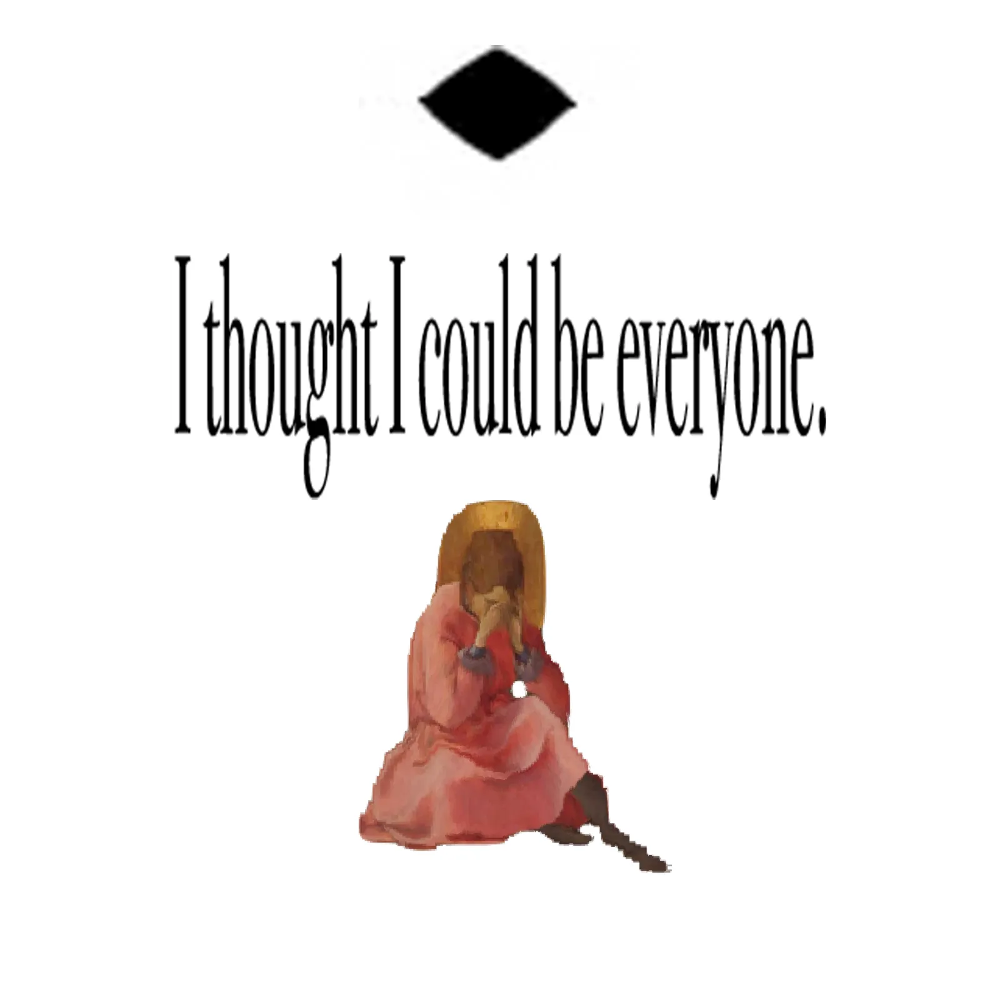
11. Mutuals
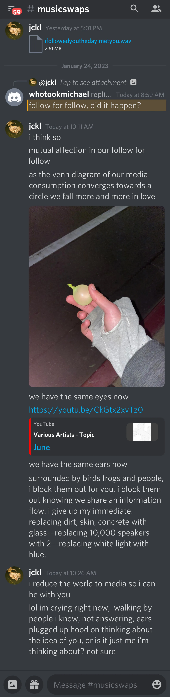
A: Now Lisa just started following my Instagram. B: I usually follow people pretty quickly. C: I followed you the day I met you. A: I know that was so cute. I followed you back the day I met you. Voice it's my disguise, I'm by your side. What you do to me? So pretty, yes, you do. What you do to me? whotookmichael: follow for follow, did it happen? jckl: I think so, mutual affection in our follow for follow. As the Venn diagram of our media consumption converges towards a circle we fall more and more in love. We have the same eyes now. We have the same ears now. Surrounded by birds, frogs, and people, I block them out for you. I block them out knowing we share an information flow. I give up my immediate replacing dirt, skin, grass with glass, replacing 10,000 speakers with 2, replacing white light with blue. I reduce the world so I can be with you. lol, I'm crying right now, walking by people I know, not answering, ears plugged up I'm thinking about the idea of you, or is it just me I'm thinking about? Not sure. What you do to me? What you do to me?
12. niche
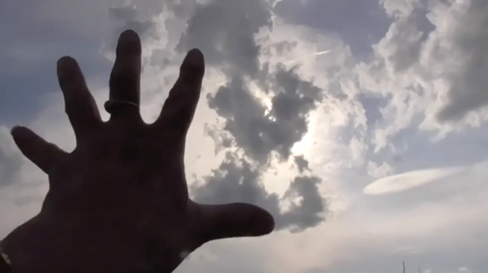
And the unnamed become text, become word, become mouth, become many texts, many words, many mouths, become the word become us. And this unnamed, once so exalted, sinks into stereotype, diluted by those higher up the ladder. From the mud, we shriek at the heavens, shouting chemicals chemicals chemicals! and everything human and lower.
13. asphyxiate
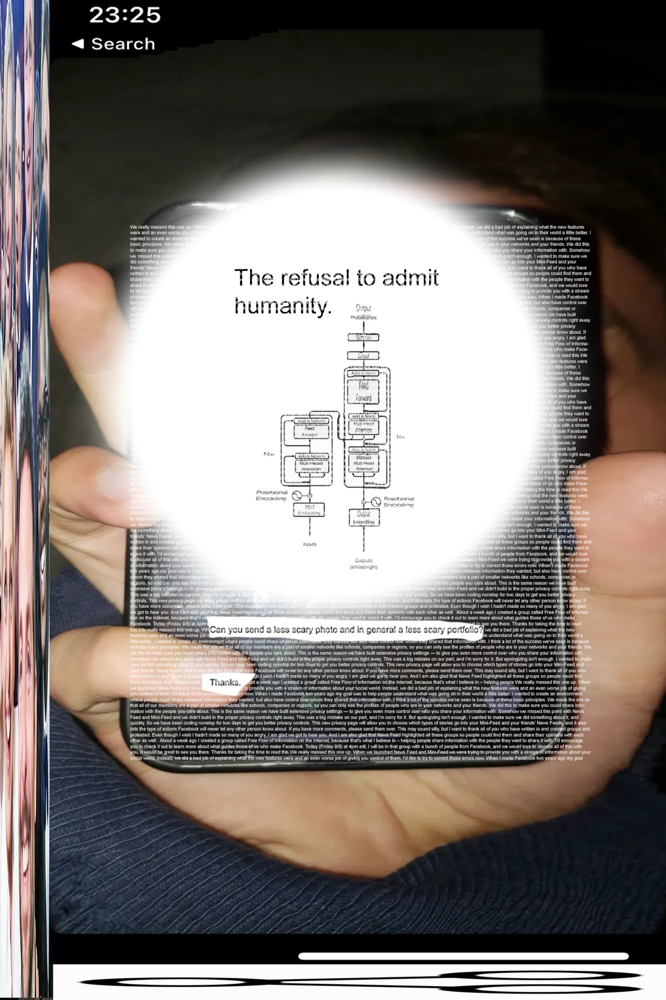
Another dull, dingy, dirty, very disturbing and disgusting day in Disturbia. I just turned the corner and look at this cloud, it looks like it's falling down. Whenever we have real clouds in the sky, like here, you can really see some strange phenomena going on. They don't want us to know the truth they don't want us to have the benefit of the truth. Look at this swirl beyond there. I never until about, maybe, 10 years ago, I saw 2 3 4 layers, of clouds in the sky. This white plaster that's stuck to the sky. Take a look, this is a vestige of a real cloud that was attacked. Normally the sun can shine through this, if it were a real cloud, but it cannot shine through that metal plate. Remember when the sun used to cast shadows of clouds on the ground? You're never going to see that anymore, ever. There's a real plane up there flying flush to the ground, at least that's what it looks like God knows. Take a look at this seam here opening up. Oh I could go on and on; just take a look at the sky back here compared to over here. It just doesn't make sense; it's lawless, and that's how we know that it is not natural, it is not... nothing is continuous, nothing is contiguous, nothing is congruous. Look at this thing now it's breaking up, you see that? We are being asphyxiated. Oxygen depletion is creation's deletion.
14. Asphyxiation
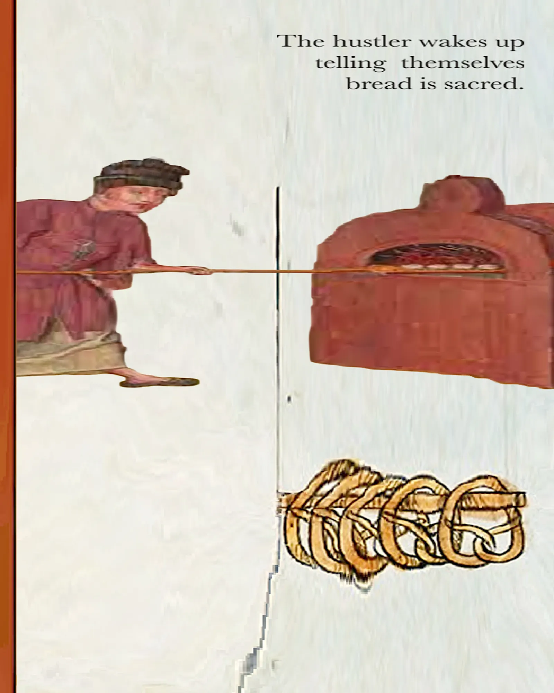
He walks. Say we need to talk, he walks. You say sit down. You stare politely right on through. Some sort of window to your eye. She goes left and you stay right. Fear and blame. You begin to open, why'd you came? Where did I go wrong? I lost a friend somewhere along in the bitterness end. Would I stay up with you all night, when I'd know how to save a life? Pray to God he kills you, and I pray to God he kills you.
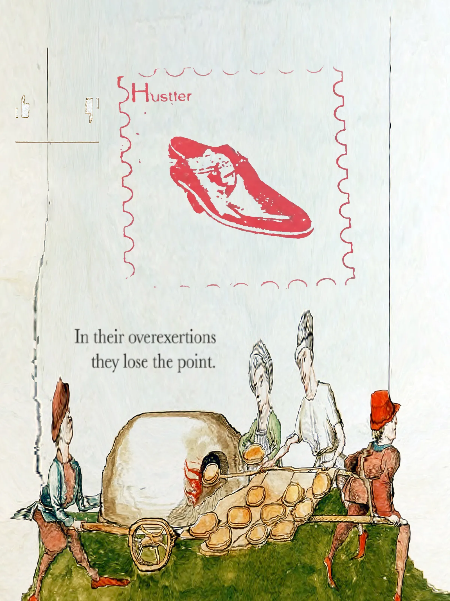
15. spiral
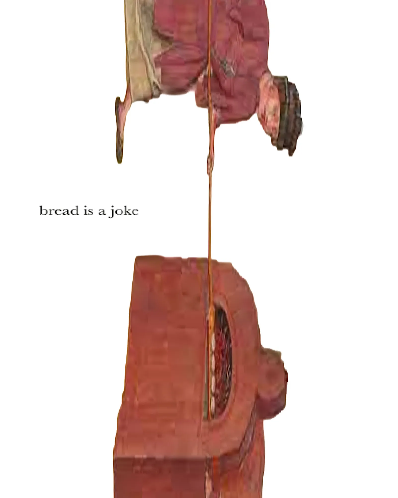
And after every spiral, after every drift of the spirit, we are returned to that same point. We are obligated, we beg and plead to be shown anything but that. We search for pockets of delusions, we rest in the focus of a lunatic. We grasp at symbols and bodies so feeble, so lovely, good enough to keep ourselves busy, to avoid the point. But I've come up empty and it's starting to stink. And in moments of rest the filth is known, the tinnitus comes in, the frogs overwhelm and the point is made... and I'm scared again. Bread is a joke. And these affections so flimsy these exertions so aimless the rejoicing becomes empty and everything spills out into the pit. And it stops looking so special, it stops looking so careful, so pretty, and our peace gives way and the soot in the corner of my room becomes apparent and the confusion takes hold. With some holy terror.
16. Confrontation
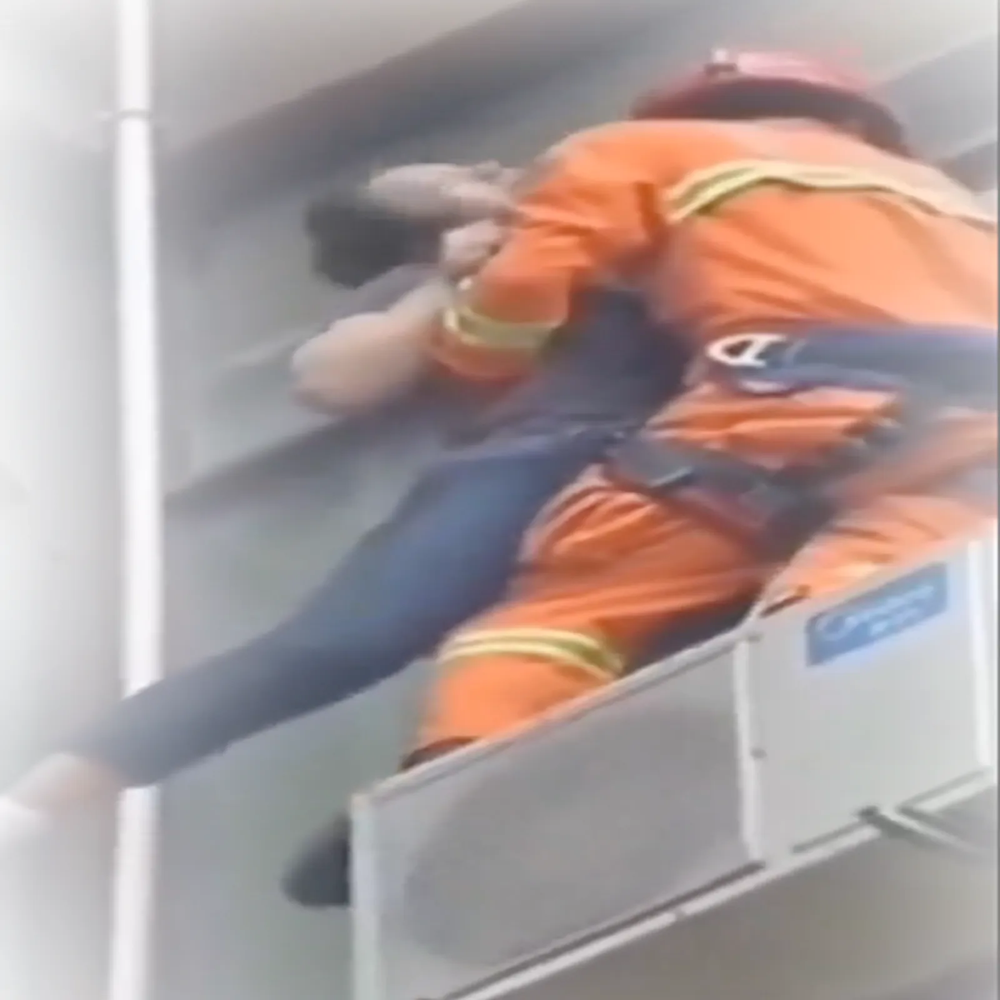
I know baby I know. 100. 44. Thousand! With their fall-. 100. 44. Thousand! With their fallacy! And their waters down, and breathe, and the music starving. I love you. I fucking love you, I fucking love you! See me move this way, it will be okay stay with me. I'll pick you up. I know baby it hurts. Please.
17. Affection
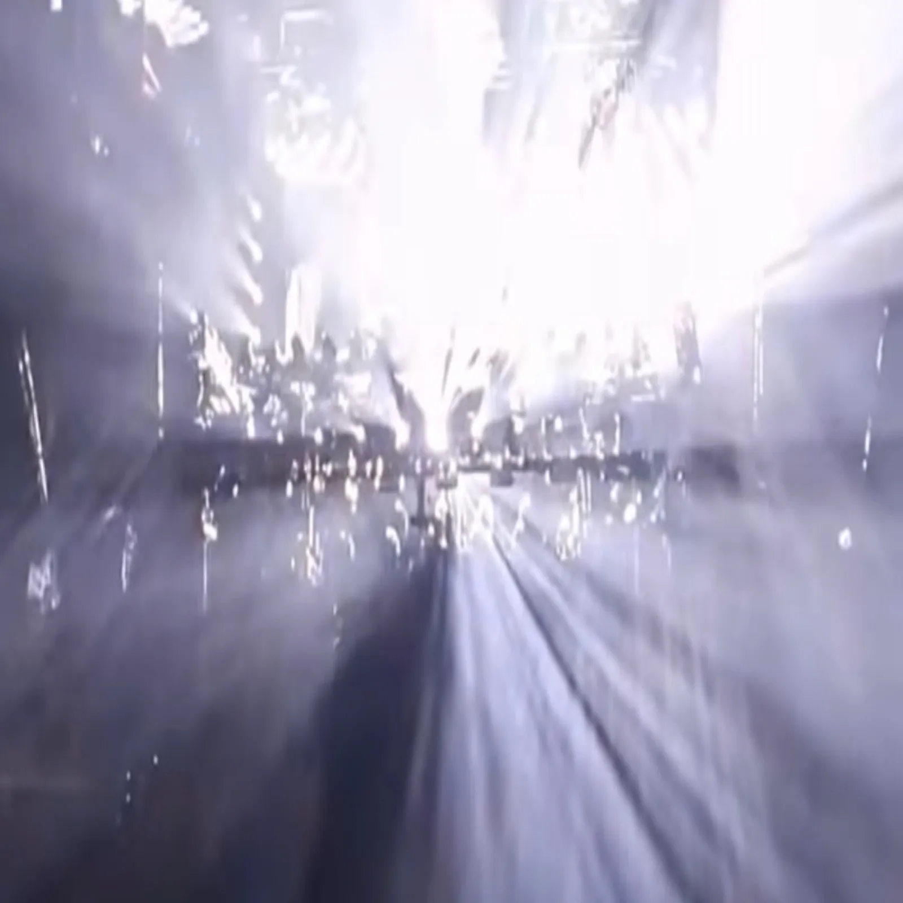
My love are those bad thoughts still plaguing your mind? Are you still overcome with anxieties? Oh no, I understand, simple physical affections cannot help.
18. and then
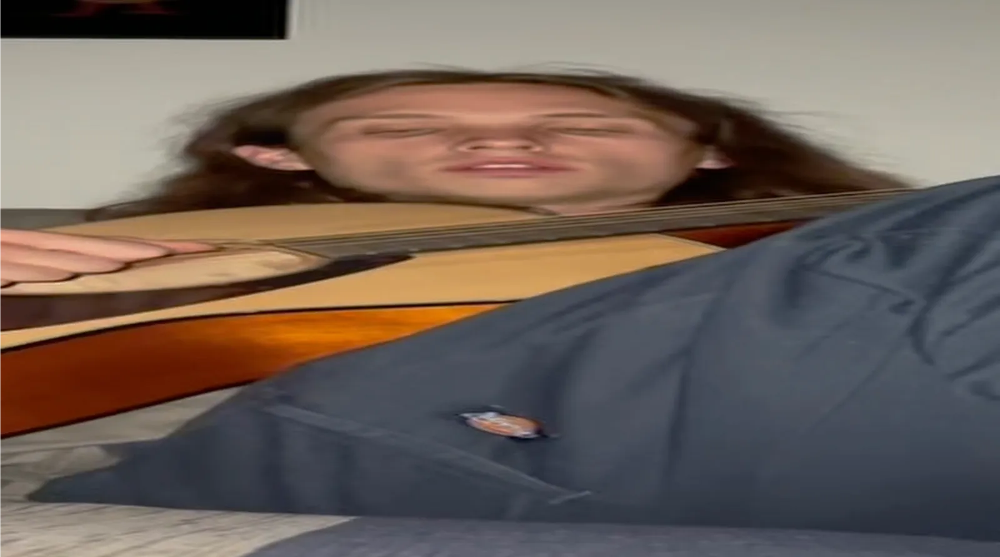
I've been having so many dreams, all violent. I crashed my car with Alex, both ejected out the seats. And we landed on some grey cliff all bloody and busted and it's sunset, and then we started to feel the presence and it's so pretty, and it would be nice to die pretty and in good company. And we shouted towards the sea, "I'm seeing this repetition this perfect repetition and I've done this dream thousands of times. Thousands of times I get to have this feeling thousands of times, I'm so lucky." And then the sun went down, and the darkness came on, and I cried and passed out from blood loss. And I woke up with a sort of ecstasy, and I saw the words "I love you" shoved up against the corner, and I finally remembered the point.